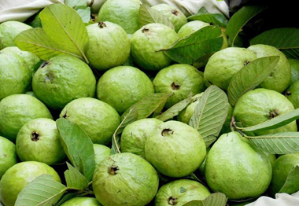

পেয়ারার পরিচিতি
পেয়ারা একরকমের সবুজ রঙের বেরী জাতীয় ফল । তবে অন্যান্য বর্ণের পেয়ারাও দেখতে পাওয়া
যায়। লাল পেয়ারাকে (Marroonguava) রেড আপেলও বলা হয়। পেয়ারার বৈজ্ঞানিক নাম Psidiun
guajava । পেয়ারার প্রায় ১০০টিরও বেশি প্রজাতি আছে। এটি একটি পুষ্টিকর ফল।

পেয়ারার পুষ্টি উপাদান
পেয়ারায় প্রচুর পরিমাণে ভিটামিন ‘সি’ পাওয়া যায়৷ ১০০ গ্রাম পেয়ারায় ১৮০ মি.গ্রাম ভিটামিট ‘সি’ থাকে, যা কমলার তুলনায় পাঁচগুণ বেশি৷ পেয়ারায় আছে ভিটামিট ‘এ’ ও ভিটামিন ‘বি’ কমপ্লেক্স৷ আছে যথেষ্ট পরিমাণে বিটা ক্যারোটিন৷ সেই সঙ্গে রয়েছে ক্যালসিয়াম, ফসফরাস, পটাসিয়াম, ফলিক এসিড ও নিকোট্রিন এসিড৷
পেয়ারার উপকারীতা
ডায়রিয়ায় পেয়ারাঃ
পেয়ারা ডায়রিয়ার বিরুদ্ধে লড়তে পারে। তাই নিয়মিত পেয়ারা খেলে ডায়রিয়া হওয়ার আশঙ্কা কমে
যাবে অনেকটা। পেয়ারার আছে ব্যাকটেরিয়ার বিরুদ্ধে লড়াই করার ক্ষমতা। এ ছাড়া আমাশয় হওয়ার
জন্য যে ব্যাকটেরিয়াটি দায়ী, তার বংশবৃদ্ধিকে কমিয়ে দিতে সক্ষম পেয়ারা। তাই সদাইপাতির
সঙ্গে পেয়ারাও কিনুন।
কোষ্ঠকাঠিন্যঃ
কাঁচা হোক কিংবা পাকা সব পেয়ারাই কিন্তু গুণে অনন্য। অনেকে পাকা পেয়ারা হেলায় ফেলে দেন।
পাকা পেয়ারায় কোষ্ঠকাঠিন্য দূর হয়। তাই পাকা পেয়ারাও যতœ করে খান।
ঠান্ডা কাশিতেঃ
পেয়ারা ঠান্ডা কাশিরও পথ্য। এ ছাড়া শ্বাসতন্ত্র, গলা ও ফুসফুসকে ব্যাকটেরিয়ার আক্রমণ
থেকে সুরক্ষা দেয়। পেয়ারায় আছে প্রচুর পরিমাণে ভিটামিন সি ও খনিজ। তাই নিয়মিত পেয়ারা
খেলে যখন-তখন ঠান্ডা লাগার শঙ্কা কমে যাবে।
ত্বকের জন্যঃ
ত্বক ভালো রাখতে পেয়ারার জুড়ি নেই। পেয়ারায় আছে অ্যাসট্রিনজেন্টসহ আরও কিছু ত্বকবান্ধব
উপাদান। তাই পেয়ারা ত্বক যেমন ভালো রাখে, অন্যদিকে ত্বককে টানটান করতে সাহায্য করে। এক
গবেষণায় দেখা গেছে, বাজারে যেসব সৌন্দর্যবর্ধক ক্রিম বা স্কিন টোনার পাওয়া যায়, তার
চেয়ে পেয়ারার কার্যক্ষমতা অনেক বেশি।
স্কার্ভিতে রোগেঃ
স্কার্ভি রোগেরও ভালো দাওয়াই কিন্তু পেয়ারা। স্কার্ভিতে মাড়ি ফুলে যায়, রক্ত ঝরে মাড়ি
থেকে। পেয়ারায় প্রচুর ভিটামিন সি থাকায় স্কার্ভির বিরুদ্ধে তার লড়ার ক্ষমতাও বেশি।
হিসাব করে দেখা গেছে, একটি কমলায় থাকা ভিটামিন সি-র তুলনায় পেয়ারায় ভিটামিন সি থাকে চার
গুণ বেশি।
ক্যানসার উপশমেঃ
ক্যানসার প্রতিরোধেও পেয়ারা কাজ করে। এতে থাকা অ্যান্টিঅক্সিডেন্ট, লাইকোপেন, ক্যানসার
কোষের বিরুদ্ধে প্রতিরোধ গড়তে পারে। নির্দিষ্ট করে বললে, প্রস্টেট ক্যানসার আর ¯ত্মন
ক্যানসারের জন্য পেয়ারা উপকারী। পুষ্টি পূরণে আর রোগ প্রতিরোধে পেয়ারার জুড়ি নেই।